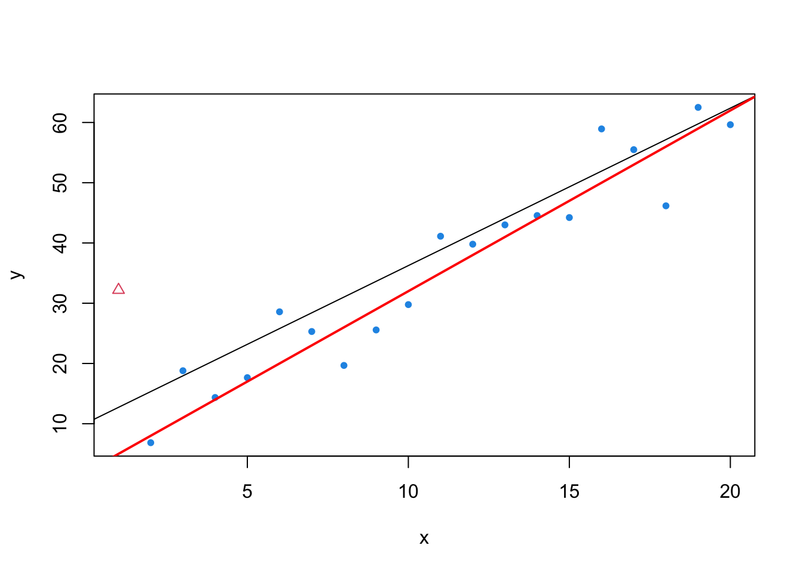
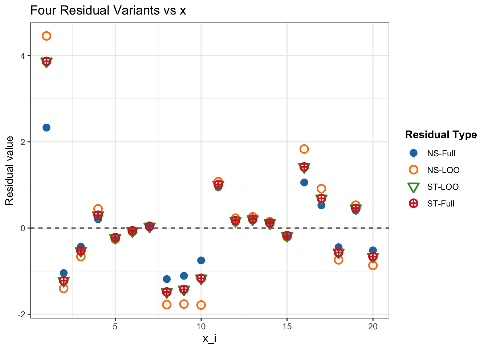

In statistical modeling, identifying data points that don’t fit—the outliers—is a critical step. The most reliable tool for this job is the externally studentized residual. Its power comes from a simple, intuitive idea: to judge a point fairly, you shouldn’t use that point when building your model. This is the core principle of Leave-One-Out Cross-Validation (LOOCV).
This article provides a complete walkthrough of this essential concept. We’ll start with the basic linear model, introduce the necessary notation, explore the flaws of simpler residuals, and then formally define and prove the equivalence of the conceptual and computational formulas for studentized residuals. Finally, we’ll make it all concrete with a simple example.
2 The Linear Model
Our discussion is based on the standard multiple linear regression model. In matrix form, the relationship between a response vector Y and a predictor matrix X is: \[
\mathbf{Y} = \mathbf{X}\beta + \epsilon
\]
where:
Y is an n x 1 vector of the observed outcomes.
X is the n x p design matrix of predictor variables (where p is the number of coefficients, including the intercept).
\(\beta\) is the p x 1 vector of unknown true coefficients we want to estimate.
\(\epsilon\) is an n x 1 vector of unobservable random errors, assumed to be independent and identically distributed with a mean of 0 and a variance of \(\sigma^2\).
3 Our Notations üí°
To discuss models fit with all data versus those with one point removed, we need clear notation.
Full Data Model (Using all n observations)
\(\hat{\beta}\): The estimated coefficient vector.
\(\hat{y}_i\): The predicted value for observation i from this model.
\(e_i\): The ordinary residual (\(e_i = y_i - \hat{y}_i\)).
\(\hat{\sigma}\): The estimated standard deviation of the errors (Residual Standard Error).
\(h_{ii}\): The leverage of observation i, a measure of how much its x-values influence the model.
Leave-One-Out (LOOCV) Model
\(\hat{\beta}_{-i}\): The coefficient vector estimated after removing observation i.
\(\hat{y}_{i,-i}\): The predicted value for observation i, from the model fit without observation i.
\(e_{i,-i}\): The deleted residual (\(e_{i,-i} = y_i - \hat{y}_{i,-i}\)).
\(\hat{\sigma}_{-i}\): The standard deviation of the errors estimated from the model fit without observation i.
4 Non-studentized Residuals
Before getting to the correct solution, it’s crucial to understand why simpler methods of standardizing residuals are flawed.
4.1The Ordinary Residual (\(e_i\)): Too Small and \(x_i\) Dependent
The most basic residual, \(e_i\), is problematic for two key reasons.
An outlier has an undue influence on the model, pulling the regression line towards itself. This makes its own predicted value, \(\hat{y}_i\), artificially close to its actual value, \(y_i\). As a result, its residual, \(e_i\), is deceptively small and doesn’t reflect the true magnitude of the error.
The variance of an ordinary residual is not constant; it depends on the point’s leverage. The variance can be derived from the hat matrix \(H = X(X^\top X)^{-1}X^\top\). Since \[\hat{y} = HY,\] we have \[\begin{equation}
e = (I - H)\epsilon.
\end{equation}\] Thus, \[\begin{equation}
\mathrm{Var}(e) = (I-H)\,\sigma^2\,(I-H)^\top = (I-H)\sigma^2.
\end{equation}\] Therefore, for the \(i\)th residual, \[\begin{equation}
\mathrm{Var}(e_i) = \sigma^2(1 - h_{ii}).
\end{equation}\]
Since leverage (\(h_{ii}\)) is always greater than 0, the variance of an ordinary residual is always less than the true error variance,\(\sigma^2\). High-leverage points act as “anchors” for the line and have even smaller variance.
4.2The LOOCV Residual (\(e_{i,-i}\)): Too large and \(x_i\)-Dependent Variance
The deleted residual, \(e_{i,-i}\), solves the “too small” problem. Because the model isn’t influenced by the point it’s predicting, the residual is an honest measure of prediction error. However, its variance is still not constant. The variance of a deleted residual also depends on leverage, but in the opposite way. \[\begin{equation}
\text{Var}(e_{i,-i}) = \frac{\sigma^2}{1 - h_{ii}}
\end{equation}\]
Since \(1-h_{ii}\) is less than 1, the variance of a deleted residual is always greater than the true error variance,\(\sigma^2\). This is because it has two sources of randomness: the error in the point itself (\(y_i\)) and the error in the prediction (\(\hat{y}_{i,-i}\)).
5 Studentized Residuals
5.1 Studentized LOOCV (Deleted) Residual
The correct solution is to take the LOOCV residual and divide it by its true standard error, which properly accounts for its larger, x-dependent variance. This is the externally studentized residual, \(t_i\), defined as follows:
\[
t_i = \frac{e_{i,-i}}{\text{SE}(e_{i,-i})} = \frac{e_{i,-i}}{\frac{\hat{\sigma}_{-i}}{\sqrt{1-h_{ii}}}}
\tag{1}\] This final value is a reliable diagnostic. Under the null hypothesis that the observation is not an outlier, it follows a Student’s t-distribution with \(n - p - 1\) degrees of freedom.
5.2 Studentized Full Data Residuals
Calculating the conceptual formula appears to require fitting n different regression models—a computationally expensive task. Fortunately, a mathematical identity allows us to calculate the exact same value using only the results from the single, full data model.
\[
t_i = \frac{e_i}{\hat{\sigma}_{-i}\sqrt{1 - h_{ii}}}
\tag{2}\] This is not an approximation; it is an exact algebraic rearrangement of the conceptual definition.
Let’s start with the conceptual definition of the studentized LOOCV residuals Equation 1 and show how it transforms into Equation 2.
Start with the conceptual LOOCV definition:\[\begin{equation}
t_i = \frac{e_{i,-i}}{\text{SE}(e_{i,-i})} = \frac{e_{i,-i}}{\frac{\hat{\sigma}_{-i}}{\sqrt{1-h_{ii}}}}
\end{equation}\]
Substitute the key identity into the numerator: \[\begin{equation}
t_i = \frac{\frac{e_i}{1 - h_{ii}}}{\frac{\hat{\sigma}_{-i}}{\sqrt{1 - h_{ii}}}}
\end{equation}\]
Simplify the complex fraction. We can do this by multiplying the numerator by the reciprocal of the denominator: \[\begin{equation}
t_i = \frac{e_i}{1-h_{ii}} \cdot \frac{\sqrt{1-h_{ii}}}{\hat{\sigma}_{-i}}
\end{equation}\]
Cancel the terms. Since \(1 - h_{ii} = (\sqrt{1 - h_{ii}})^2\), one of the \(\sqrt{1 - h_{ii}}\) terms in the denominator cancels with the term in the numerator. This leaves us with the computational shortcut formula: \[\begin{equation}
t_i = \frac{e_i}{\hat{\sigma}_{-i}\sqrt{1-h_{ii}}}
\end{equation}\]
This proves that the two formulas are mathematically identical. The computational shortcut is simply a clever algebraic rearrangement of the more intuitive LOOCV definition, allowing for efficient and accurate calculation. ✅
6 List of Residuals
In this article, we will compare the four residuals given as:
The simulation uses a simple linear regression model to describe the relationship between a single predictor variable, \(x_i\), and a response variable, \(y_i\). The underlying “true” model from which the data is generated is: \[y_i = 2 + 3x_i + \epsilon_i\] This means we have a true intercept of 2, a true slope of 3, and a random error term, \(\epsilon_i\), drawn from a normal distribution with a mean of 0 and a standard deviation of 5. Two artificial outliers are added to this data to test the behavior of the different residual types.
Code
# Load librarieslibrary(dplyr)library(knitr)# -------------------------------# 1) Data and full-model fit# -------------------------------set.seed(123)n <-20x <-1:ny <-2+3* x +rnorm(n, mean =0, sd =5)y[1] <- y[1] +30#y[11] <- y[11] - 30 o.index <-c(1)flag.outlier <-rep(20, n)flag.outlier[o.index] <-2full_data <-data.frame(x = x, y = y)plot(y~x, data=full_data, pch= flag.outlier, col=flag.outlier)abline(lm(y~x, data=full_data))abline (a=2, b=3, col="red", lwd=2)

7.2 Description of Calculated Columns
The final table compiles several important quantities calculated during the simulation. Here’s what each column represents:
\(x_i\): The predictor variable, which is simply the index of the observation from 1 to 20.
\(h_i\): The leverage of the i-th observation. It measures how influential a point’s x-value is in determining the model’s fit. A higher value indicates a more influential point.
\(e_i\): The ordinary residual, calculated as the difference between the actual value (\(y_i\)) and the predicted value (\(\hat{y}_i\)) from the model fit on all data.
\(\hat{\sigma}\): The residual standard error (or Root Mean Square Error) of the full model, representing the typical size of an ordinary residual.
\(e_{i,-i}\): The deleted (or LOOCV) residual. This is the difference between the actual value (\(y_i\)) and the value predicted for it by a model that was fit on all other data except point i.
\(\hat{e}_{i,-i}\): This column shows the deleted residual calculated using the efficient algebraic shortcut (\(e_i / (1-h_{ii})\)), verifying it’s identical to the brute-force \(e_{i,-i}\).
\(\hat{\sigma}_{-i}\): The LOOCV residual standard error, calculated from a model that was fit after removing observation i.
\(\tilde{\sigma}_{-i}\): The LOOCV residual standard error, calculated from the shortcut formula Equation 4.
NS-Full: The Non-studentized Full-Data Residual, calculated as the ordinary residual divided by the full model’s standard error (\(e_i / \hat{\sigma}\)).
NS-LOO: The Non-studentized LOOCV Residual, calculated as the deleted residual divided by the corresponding LOOCV standard error (\(e_{i,-i} / \hat{\sigma}_{-i}\)).
ST-LOO: The Studentized LOOCV Residual, calculated using the conceptual formula by dividing the deleted residual by its true standard error.
ST-Full: The Studentized Full-Data Residual, calculated using the efficient shortcut formula, which is provided by R’s rstudent() function.
# Load librarieslibrary(dplyr)library(tidyr)library(ggplot2)library(knitr)# -------------------------------# 3) Plotting Code with Updated Names# -------------------------------# Prepare data for plottingplot_df <- residuals_df %>%# Use the new, simple column names (R converts '-' to '.')select( x, NS.Full, NS.LOO, ST.LOO, ST.Full ) %>%pivot_longer(cols =-x,names_to ="residual_type",values_to ="residual_value" )# Update the names in the mapping vectorsshape_map <-c(NS.Full =16, # solid circleNS.LOO =1, # hollow circleST.LOO =6, # asteriskST.Full =10# asterisk)labels_map <-c(NS.Full ="NS-Full",NS.LOO ="NS-LOO",ST.LOO ="ST-LOO",ST.Full ="ST-Full")color_map <-c(NS.Full ="#1f77b4", # blueNS.LOO ="#ff7f0e", # orangeST.LOO ="#2ca02c", # greenST.Full ="#d62728"# red)# Generate the plotggplot( plot_df,aes(x = x, y = residual_value,shape = residual_type, color = residual_type, group = residual_type)) +geom_hline(yintercept =0, linetype ="dashed") +geom_point(size =3, stroke =1.2) +# Increased stroke for visibilityscale_shape_manual(values = shape_map,breaks =names(labels_map),labels =unname(labels_map),name ="Residual Type" ) +scale_color_manual(values = color_map,breaks =names(labels_map),labels =unname(labels_map),name ="Residual Type" ) +labs(title ="Four Residual Variants vs x",x ="x_i",y ="Residual value" ) +theme_bw() +theme(legend.position ="right",legend.title =element_text(face ="bold") )

Four residual variants plotted against the predictor variable x.
From the above simulation results, we observe the following important facts:
Leverage and Influence: The simulation confirms that leverage (\(h_{ii}\)) measures an observation’s influence on the model’s coefficients. It shows that points with higher leverage pull the regression line toward them, resulting in smaller, deceptively conservative full-data residuals (\(e_i\)).
Conservative Residuals: The study highlights that the ordinary residual (\(e_i\)) is a “conservative” measure of error because its value for an outlier is systematically reduced by that same outlier’s influence on the model.
Identity Verification: The numerical results validated the key algebraic identity that connects the full-data residual (\(e_i\)) to the leave-one-out (deleted) residual (\(e_{i,-i}\)), as well as the identity for calculating the LOOCV standard error (\(\hat{\sigma}_{-i}\)) from the full model’s statistics. This demonstrates that all key LOOCV errors can be calculated efficiently from a single model fit.
Effective Studentization: The final step of studentization, which uses leverage to properly scale the residuals, is shown to be crucial. It successfully transforms the residuals into a reliable diagnostic tool with a constant variance across all predictor values (\(x_i\)), causing them to behave much more like a standard normal or t-distribution.
Appendix:
8 Key Identities for Efficient Calculation of LOOCV Residuals and Noice Variance
The power of modern regression diagnostics comes from algebraic shortcuts that allow us to find the results of a leave-one-out process without the computational cost of refitting the model n times. The following two identities are fundamental to this efficiency.
8.1 Finding the LOOCV Residual (\(e_{i,-i}\)) from the Ordinary Residual (\(e_i\))
This identity shows that we can find the “pure” leave-one-out residual using only the results from the single model fit on all data.
\[e_{i,-i} = \frac{e_i}{1 - h_{ii}} \tag{3}\]
8.2 Finding the LOOCV Standard Error (\(\hat{\sigma}_{-i}\)) from the Full-Model Standard Error (\(\hat{\sigma}\))
Similarly, this formula provides an efficient shortcut to see how the model’s overall error changes when a single point is removed.
The derivation of this formula relies on first proving the relationship between the full model’s Residual Sum of Squares (\(RSS\)) and the leave-one-out version (\(RSS_{-i}\)).
Start with the definition of the leave-one-out residual sum of squares: \[
RSS_{-i} = \sum_{k \neq i} (y_k - \mathbf{x}_k^T\hat{\beta}_{-i})^2
\]
Introduce the key identity that relates the leave-one-out coefficient vector (\(\hat{\beta}_{-i}\)) to the full model’s coefficient vector (\(\hat{\beta}\)): \[
\hat{\beta}_{-i} = \hat{\beta} - (X^TX)^{-1}\mathbf{x}_i \frac{e_i}{1 - h_{ii}}
\]
Substitute this identity into the expression for a generic leave-one-out residual, \(e_{k,-i} = y_k - \mathbf{x}_k^T\hat{\beta}_{-i}\). After simplification, this yields: \[
e_{k,-i} = e_k + h_{ki} \frac{e_i}{1 - h_{ii}}
\] where \(e_k\) is the ordinary residual and \(h_{ki}\) is the \((k,i)\)-th element of the hat matrix.
Substitute this back into the definition of\(RSS_{-i}\). After expanding the squared term and performing the summation (which involves considerable but standard matrix algebra), the expression simplifies to the elegant result: \[
RSS_{-i} = RSS - \frac{e_i^2}{1 - h_{ii}}
\]
Finally, derive the formula for\(\hat{\sigma}_{-i}\). We know that \(\hat{\sigma}^2_{-i} = \frac{RSS_{-i}}{n-p-1}\) and that \(RSS = (n-p)\hat{\sigma}^2\). By substituting the result from Step 4, we arrive at the formula for the variance, and taking the square root gives us the standard error. ✅